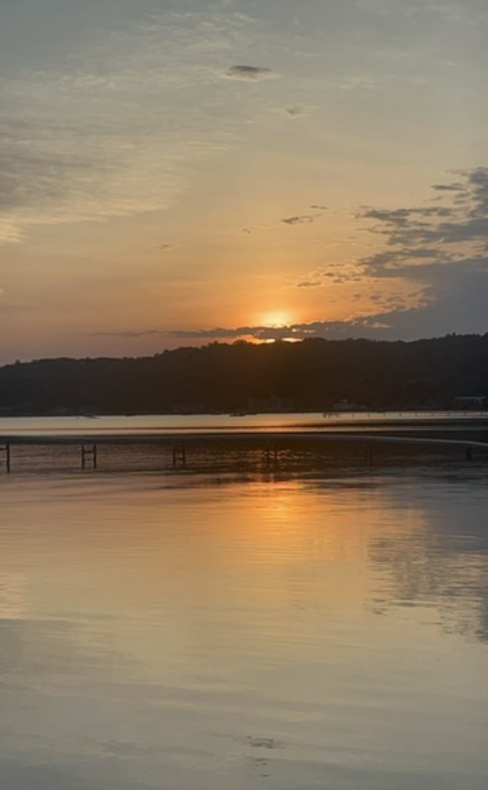

Welcome! My name is Ashleigh and I am the founder of Uncharted Pathways Travel Service. I created Uncharted Pathways for travelers who crave more than just crowded tourist attractions and rushed itineraries. My belief is that real travel should feel intentional, immersive, and deeply personal. It should be the kind of experience that stays with you long after the trip has ended. My passion for travel grew from a love of culture, language, food, and the feeling of discovering a piece of the world that truly changes your soul. Whether it's somewhere quiet and coastal, a tiny local cafe tucked away down a backroad, or watching the sunset from a rooftop, I believe the most memorable moments happen far away from the beaten path. As I continue to build my own journey toward living and traveling throughout Asia, I want to help others create experiences that are authentically their own. Not just planning trips, but creating stories worth living. Through Uncharted Pathways, my goal is to inspire travelers to step outside their comfort zones, explore intentionally, and build a life filled with curiosity, freedom, and truly unforgettable experiences. Sometimes the best destinations are the ones you never even planned to find in the first place.

I am especially focused on creating immersive travel experiences throughout Asia and Oceania, with a deeper focus on South Korea, Thailand, Taiwan and Australia and Fiji. These experiences are intentionally created to reveal the real hidden gems of any region and take you far beyond the tourists path. This is not just for the traveler who wants to put stamps in their passport, or photos on social media. This is for the traveler who wants to travel deeper and truly learn about the world that surrounds them.
Whether you're dreaming of swimming in hidden caves or finding yourself in the moment with meaningful experiences, I'd love to help bring your journey to life.
Let's Talk